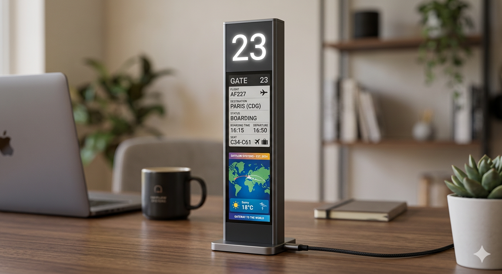

Airport Information Display Object
Airport Display
Airport Display is a collectible desktop object inspired by the visual language of airport gate signage and international departure systems. The piece transforms the usually functional, transient experience of boarding information into a calm and elegant desk companion.
Its tall vertical proportion, illuminated gate number, and layered information panels create a strong sense of presence without feeling overly technical. The design captures the quiet anticipation of travel, the orderliness of wayfinding, and the suspended emotional moment before departure.
Conceived with matte metal framing, soft backlit interfaces, and a clean architectural base, the object feels both informative and evocative. The lower display zone introduces narrative elements such as weather, map fragments, or destination cues, allowing the piece to carry memory as well as function.
- Material direction: Matte metal frame, illuminated interface panels, minimal base
- Display idea: Gate number, destination, weather, travel information
- Mood: Travel anticipation, calm order, suspended departure time